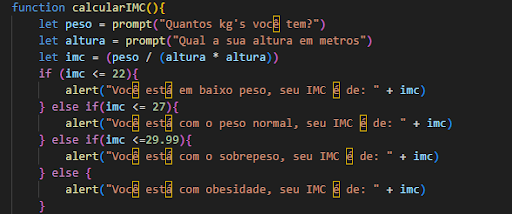
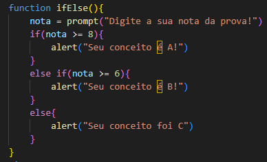

Veja um exemplo de código:

Este código serve como calculadora de IMC.
Este é um exemplo de código prático:
Este é o código que foi utilizado no botão:

Esse código serve para exibir o conceito de um aluno a partir de sua nota.